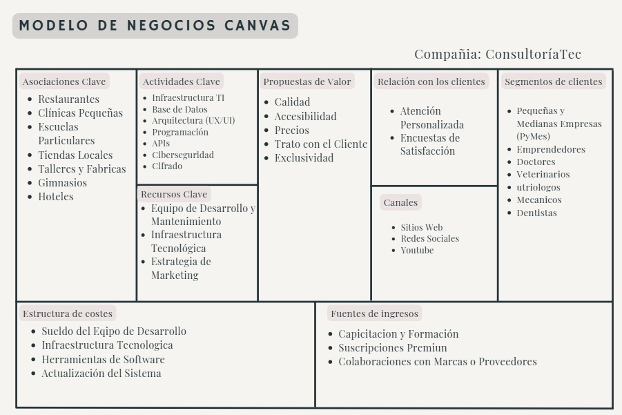
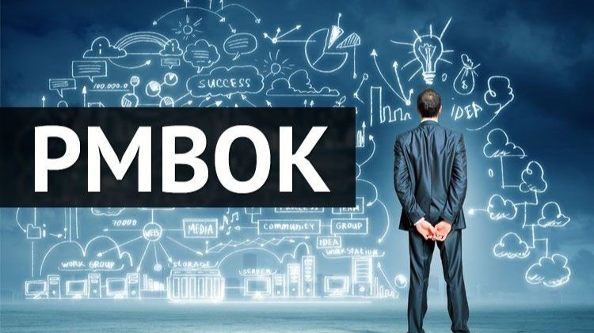
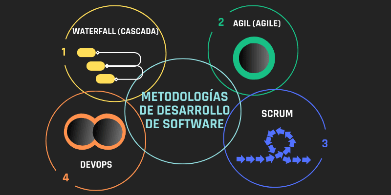

1ER PARCIAL
¿Qué es un proyecto?
Un proyecto es un esfuerzo temporal emprendido para crear un producto, servicio o resultado único. Se caracteriza por tener un inicio y fin definidos, objetivos específicos y recursos limitados.
Los proyectos se diferencian de las operaciones continuas por su naturaleza temporal y única.
- Temporalidad limitada
- Objetivo claro
- Paso a paso
Tipos de proyectos y Marco regulatorio
Los proyectos pueden clasificarse según su alcance, duración, complejidad y objetivos. En el ámbito de TI, existen proyectos de desarrollo de software, implementación de infraestructura, migración de sistemas, entre otros.
El marco regulatorio establece las normas, leyes y regulaciones que deben seguirse durante la ejecución de proyectos, garantizando el cumplimiento legal y ético.

Certificaciones IT
Las certificaciones IT validan las competencias y conocimientos de profesionales en áreas específicas de tecnología. Algunas de las más reconocidas incluyen PMP, ITIL, Scrum Master, CISSP, entre otras.
Estas certificaciones son importantes para garantizar la calidad en la gestión y ejecución de proyectos tecnológicos.
Metodologías ágiles
Las metodologías ágiles son enfoques iterativos e incrementales para el desarrollo de proyectos, priorizando la flexibilidad, la colaboración y la entrega continua de valor.
Scrum, Kanban y XP (Programación Extrema) son algunas de las metodologías ágiles más utilizadas en proyectos de desarrollo de software.
Normas y estándares
Las normas y estándares establecen criterios uniformes para la ejecución de proyectos, garantizando calidad, interoperabilidad y seguridad.
ISO 9001 (calidad), ISO 27001 (seguridad de la información) y PMBOK (guía de fundamentos para la dirección de proyectos) son ejemplos relevantes.
Centros de datos
Los centros de datos son instalaciones que albergan sistemas informáticos y componentes asociados, como telecomunicaciones y sistemas de almacenamiento.
Su diseño considera factores como seguridad, refrigeración, suministro eléctrico redundante y conectividad para garantizar la continuidad operativa.

¿Para qué se implementan los proyectos de TI?
Los proyectos de TI se implementan para resolver problemas específicos, mejorar procesos existentes, aprovechar nuevas oportunidades tecnológicas o mantener la competitividad en el mercado.
Pueden tener objetivos como aumentar la eficiencia, reducir costos, mejorar la experiencia del usuario o implementar nuevas funcionalidades.
¿Cuál es el proyecto más importante de las empresas del siglo XXI?
La transformación digital es considerado el proyecto más importante para las empresas del siglo XXI, ya que implica la integración de tecnología digital en todas las áreas del negocio.
Este proceso fundamental cambia cómo operan las empresas y cómo ofrecen valor a los clientes, siendo crucial para mantenerse competitivas.

¿Cuál es la norma que obligatoriamente se debe exponer para un proyecto de TI?
La norma ISO/IEC 27001 sobre sistemas de gestión de seguridad de la información es frecuentemente requerida, especialmente cuando el proyecto maneja datos sensibles.
Sin embargo, las normas específicas pueden variar según el tipo de proyecto, industria y jurisdicción.
¿Cuál es la institución que permite salvaguardar y proteger las obras por derechos de autor de un proyecto?
El Instituto Nacional del Derecho de Autor (INDAUTOR) en México es la institución encargada de registrar y proteger los derechos de autor sobre obras literarias, artísticas, software, etc.
El registro ante INDAUTOR otorga protección legal a las obras creativas incluidas en un proyecto.
¿Cuál es la institución que permite salvaguardar y proteger los logos e imágenes?
El Instituto Mexicano de la Propiedad Industrial (IMPI) es la institución responsable del registro de marcas, logos y signos distintivos que identifican productos o servicios.
El registro ante el IMPI otorga derechos exclusivos sobre el uso de marcas e imágenes comerciales.
2DO PARCIAL
Metodología de la Investigación
La metodología de la investigación es el conjunto de procedimientos, técnicas y herramientas que se utilizan para obtener conocimiento de manera sistemática y organizada. En el contexto de proyectos tecnológicos, es fundamental para:
- Identificar problemas y oportunidades de mejora
- Recopilar y analizar información relevante
- Validar hipótesis y soluciones propuestas
- Tomar decisiones basadas en evidencia

Existen diferentes tipos de investigación:
| Tipo |
Características |
Aplicación en TI |
| Investigación cuantitativa |
Basada en datos numéricos y estadísticos |
Análisis de métricas de rendimiento, estudios de usabilidad |
| Investigación cualitativa |
Enfocada en comprender fenómenos desde la perspectiva de los participantes |
Entrevistas con usuarios, estudios de casos |
| Investigación aplicada |
Busca resolver problemas específicos |
Desarrollo de soluciones tecnológicas para necesidades empresariales |
El proceso de investigación generalmente incluye las siguientes etapas:
- Planteamiento del problema
- Formulación de objetivos e hipótesis
- Diseño de la investigación
- Recolección de datos
- Análisis e interpretación
- Conclusiones y recomendaciones
Arquitecto de Nube: Perfil y Habilidades
El arquitecto de nube es un profesional especializado en el diseño, implementación y gestión de infraestructuras en la nube. Su rol es fundamental en proyectos tecnológicos modernos que requieren escalabilidad, flexibilidad y eficiencia en costos.
Responsabilidades principales:
- Diseñar arquitecturas de nube seguras, escalables y de alto rendimiento
- Seleccionar servicios y tecnologías cloud apropiadas para cada proyecto
- Implementar estrategias de migración a la nube
- Optimizar costos y rendimiento de infraestructuras cloud
- Garantizar la seguridad y cumplimiento normativo
Habilidades técnicas requeridas:
Conocimientos fundamentales:
- Plataformas cloud (AWS, Azure, Google Cloud)
- Infraestructura como código (Terraform, CloudFormation)
- Contenedores y orquestación (Docker, Kubernetes)
- Redes y seguridad en la nube
- Automatización y DevOps
Certificaciones relevantes:
- AWS Certified Solutions Architect
- Microsoft Certified: Azure Solutions Architect
- Google Cloud Professional Cloud Architect
- Certified Kubernetes Administrator (CKA)
Perspectivas laborales:
La demanda de arquitectos de nube ha crecido exponencialmente debido a la aceleración de la transformación digital. Según estudios del sector, es una de las profesiones tecnológicas mejor pagadas y con mayor proyección de crecimiento en los próximos años.
Modelo Canvas
El Modelo Canvas, también conocido como Business Model Canvas, es una herramienta estratégica que permite visualizar, diseñar y analizar modelos de negocio de forma clara y estructurada. Fue desarrollado por Alexander Osterwalder y se ha convertido en un estándar para emprendedores y empresas.

Business Model Canvas - Herramienta de planificación estratégica
Los 9 bloques del Modelo Canvas:
Grupos de personas u organizaciones a los que una empresa quiere alcanzar y servir.
- Mercado masivo
- Mercado de nicho
- Segmentados
- Diversificados
- Plataformas multilaterales
Paquete de productos y servicios que crean valor para un segmento específico de clientes.
- Novedad
- Rendimiento
- Personalización
- Diseño
- Marca/estatus
- Precio
- Reducción de costos
- Reducción de riesgos
- Accesibilidad
- Conveniencia/usabilidad
Cómo una empresa se comunica y llega a sus segmentos de clientes para entregar una propuesta de valor.
- Canales de comunicación
- Canales de distribución
- Canales de ventas
- Canales propios vs. asociados
Tipos de relaciones que una empresa establece con segmentos específicos de clientes.
- Asistencia personal
- Autoservicio
- Servicios automatizados
- Comunidades
- Co-creación
Contribución que los clientes están dispuestos a pagar por la propuesta de valor.
- Venta de activos
- Cuota de uso
- Cuotas de suscripción
- Préstamos/alquiler/leasing
- Concesión de licencias
- Honorarios de intermediación
- Publicidad
Activos más importantes requeridos para hacer funcionar un modelo de negocio.
- Físicos
- Intelectuales
- Humanos
- Financieros
Acciones más importantes que debe realizar una empresa para que su modelo de negocio funcione.
- Producción
- Resolución de problemas
- Plataforma/red
Red de proveedores y colaboradores que hacen que el modelo de negocio funcione.
- Alianzas estratégicas
- Cooperación entre competidores
- Empresas conjuntas
- Relaciones comprador-proveedor
Costos más importantes incurridos al operar un modelo de negocio.
- Costos fijos
- Costos variables
- Economías de escala
- Economías de alcance
Aplicación en proyectos tecnológicos:
El Modelo Canvas es especialmente útil en proyectos de TI para:
- Definir claramente el valor que aporta una solución tecnológica
- Identificar los recursos y actividades necesarias para el desarrollo
- Establecer modelos de monetización para productos digitales
- Comunicar de manera efectiva la propuesta de valor a stakeholders
- Planificar la infraestructura tecnológica requerida
- Identificar socios estratégicos y canales de distribución
Nota: El Business Model Canvas es una herramienta dinámica que debe actualizarse regularmente según evolucione el proyecto o negocio.
PMBOK (Project Management Body of Knowledge)
El PMBOK es un conjunto de estándares y directrices para la gestión de proyectos, desarrollado por el Project Management Institute (PMI). Se considera la guía más importante a nivel mundial para profesionales de la gestión de proyectos.

Las 10 áreas de conocimiento del PMBOK:
- Gestión de la Integración: Coordina todos los aspectos del proyecto
- Gestión del Alcance: Define y controla lo que está incluido en el proyecto
- Gestión del Tiempo: Planifica y controla el cronograma
- Gestión de Costos: Estima, presupuesta y controla costos
- Gestión de la Calidad: Asegura que el proyecto cumple con los requisitos
- Gestión de Recursos: Identifica, adquiere y gestiona recursos
- Gestión de Comunicaciones: Gestiona el flujo de información
- Gestión de Riesgos: Identifica, analiza y responde a riesgos
- Gestión de Adquisiciones: Adquiere productos/servicios externos
- Gestión de los Interesados: Identifica y gestiona expectativas
Los 5 grupos de procesos:
- Iniciación: Define y autoriza el proyecto
- Planificación: Establece el alcance y objetivos
- Ejecución: Realiza el trabajo del proyecto
- Seguimiento y Control: Supervisa, revisa y regula el progreso
- Cierre: Finaliza formalmente el proyecto
Certificaciones PMI basadas en PMBOK:
- PMP (Project Management Professional)
- CAPM (Certified Associate in Project Management)
- PgMP (Program Management Professional)
- PMI-ACP (Agile Certified Practitioner)
Metodologías de Desarrollo: Cascada, Ágil y Lean
Las metodologías de desarrollo establecen marcos de trabajo para planificar, ejecutar y controlar proyectos. La elección de la metodología adecuada es crucial para el éxito del proyecto.

Metodología Cascada (Waterfall):
Enfoque secuencial donde cada fase debe completarse antes de pasar a la siguiente.
- Ventajas: Estructura clara, documentación completa, fácil de medir el progreso
- Desventajas: Poca flexibilidad, dificultad para incorporar cambios, entrega tardía del producto
- Adecuado para: Proyectos con requisitos bien definidos y estables
Metodologías Ágiles:
Enfoques iterativos e incrementales que priorizan la flexibilidad y la entrega continua de valor.
- Scrum: Marco de trabajo iterativo que divide el proyecto en sprints
- Kanban: Enfoque visual para gestionar el flujo de trabajo
- XP (Extreme Programming): Enfatiza la calidad del código mediante prácticas específicas
- Ventajas: Flexibilidad, entrega rápida de valor, adaptación al cambio
- Desventajas: Puede carecer de documentación, requiere equipo altamente comprometido
Metodología Lean:
Se centra en la eliminación de desperdicios y la maximización del valor para el cliente.
- Principios clave: Eliminar desperdicios, amplificar el aprendizaje, decidir lo más tarde posible, entregar lo más rápido posible
- Herramientas: Value Stream Mapping, Kanban, Just-in-Time
- Aplicación en TI: Desarrollo de software, gestión de proyectos, mejora de procesos
- Ventajas: Reducción de costos, mejora de la eficiencia, enfoque en el valor
Comparativa de metodologías:
| Característica |
Cascada |
Ágil |
Lean |
| Enfoque |
Secuencial |
Iterativo |
Basado en valor |
| Flexibilidad |
Baja |
Alta |
Media-Alta |
| Documentación |
Extensa |
Mínima viable |
Enfocada en valor |
| Entrega |
Al final |
Continua |
Justo a tiempo |
| Rol del cliente |
Al inicio y final |
Continuo |
Centro del proceso |
3ER PARCIAL
Análisis de Datos para Mejores Decisiones
El análisis de datos es el proceso de inspeccionar, limpiar, transformar y modelar datos con el objetivo de descubrir información útil, llegar a conclusiones y apoyar la toma de decisiones.
Importancia del análisis de datos:
- Mejora la toma de decisiones: Basadas en evidencia en lugar de intuición
- Identifica oportunidades: Detectar tendencias y patrones del mercado
- Optimiza procesos: Identificar ineficiencias y áreas de mejora
- Reduce costos: Eliminar gastos innecesarios y optimizar recursos
- Mejora la experiencia del cliente: Personalizar productos y servicios
Tipos de análisis de datos:
| Tipo |
Propósito |
Ejemplos |
| Descriptivo |
¿Qué ha sucedido? |
Reportes de ventas, métricas de rendimiento |
| Diagnóstico |
¿Por qué sucedió? |
Análisis de causa raíz, correlaciones |
| Predictivo |
¿Qué podría suceder? |
Pronósticos de ventas, modelos de machine learning |
| Prescriptivo |
¿Qué deberíamos hacer? |
Recomendaciones, optimización |
Proceso de análisis de datos:
- Definición del problema: Establecer objetivos claros
- Recolección de datos: Obtener datos relevantes de fuentes confiables
- Limpieza y preparación: Eliminar errores y preparar datos para análisis
- Análisis exploratorio: Identificar patrones y relaciones
- Modelado: Aplicar técnicas estadísticas y algoritmos
- Interpretación: Extraer insights significativos
- Comunicación: Presentar resultados de manera clara
Dato importante: Según estudios, las empresas que utilizan análisis de datos tienen 23 veces más probabilidades de adquirir clientes y 19 veces más probabilidades de ser rentables.
Científico de Datos: Perfil y Tareas
Un científico de datos es un profesional que utiliza métodos científicos, procesos, algoritmos y sistemas para extraer conocimiento e insights de datos estructurados y no estructurados.

Perfil del científico de datos:
Habilidades técnicas:
- Programación (Python, R, SQL)
- Estadística y matemáticas
- Machine Learning y AI
- Bases de datos y Big Data
- Visualización de datos
Habilidades blandas:
- Pensamiento crítico y analítico
- Comunicación efectiva
- Curiosidad intelectual
- Capacidad para resolver problemas
- Trabajo en equipo
Tareas principales de un científico de datos:
Identificar y formular problemas empresariales que pueden resolverse con datos.
- Entender necesidades del negocio
- Definir objetivos medibles
- Establecer métricas de éxito
Obtener datos de diversas fuentes internas y externas.
- APIs y web scraping
- Bases de datos empresariales
- Fuentes de datos públicas
- Sensores y dispositivos IoT
Transformar datos brutos en formatos utilizables.
- Manejo de valores faltantes
- Corrección de errores
- Normalización y estandarización
- Feature engineering
Descubrir patrones, relaciones y anomalías en los datos.
- Análisis estadístico descriptivo
- Visualizaciones exploratorias
- Detección de outliers
- Análisis de correlaciones
Aplicar algoritmos de machine learning para crear modelos predictivos.
- Selección de algoritmos
- Entrenamiento de modelos
- Validación cruzada
- Optimización de hiperparámetros
Presentar hallazgos de manera comprensible para stakeholders.
- Dashboards interactivos
- Reportes ejecutivos
- Presentaciones visuales
- Recomendaciones accionables
Perspectivas laborales:
La ciencia de datos es una de las profesiones más demandadas del siglo XXI. Según LinkedIn, ha sido catalogada como el trabajo más prometedor durante varios años consecutivos, con un crecimiento salarial promedio del 15-20% anual.
Tipos de Modelos de Negocio
Un modelo de negocio describe la forma en que una organización crea, entrega y captura valor. Es la base fundamental sobre la cual se construye cualquier empresa exitosa.
Modelos de negocio tradicionales:
| Modelo |
Descripción |
Ejemplo |
| Fabricante |
Crea productos y los vende a distribuidores o directamente a consumidores |
Ford, Samsung |
| Distribuidor |
Compra productos de fabricantes y los vende a minoristas o consumidores |
Walmart, Costco |
| Minorista |
Vende productos directamente a consumidores finales |
Zara, Best Buy |
| Franquicia |
Vende el derecho de usar un modelo de negocio probado y una marca |
McDonald's, Subway |
Modelos de negocio digitales modernos:
Ofrece servicios básicos gratuitos con funcionalidades premium de pago.
- Ventaja: Adquisición masiva de usuarios
- Desafío: Conversión a planes pagos
- Ejemplo: Spotify, Dropbox
Clientes pagan una tarifa recurrente por acceso continuo a un producto o servicio.
- Ventaja: Ingresos predecibles
- Desafío: Retención de clientes
- Ejemplo: Netflix, Adobe Creative Cloud
Conecta compradores y vendedores, cobrando una comisión por transacción.
- Ventaja: Escalabilidad sin inventario
- Desafío: Efecto red (atraer ambos lados)
- Ejemplo: Amazon, Airbnb
Ofrece servicios gratuitos monetizados mediante publicidad.
- Ventaja: Acceso a audiencias masivas
- Desafío: Dependencia de anunciantes
- Ejemplo: Google, Facebook
Facilita el intercambio temporal de bienes o servicios entre particulares.
- Ventaja: Utilización de activos ociosos
- Desafío: Regulación y confianza
- Ejemplo: Uber, Airbnb
Monetiza datos recopilados a través de análisis, insights o productos derivados.
- Ventaja: Barreras de entrada altas
- Desafío: Privacidad y regulación
- Ejemplo: Palantir, Nielsen
Factores para elegir un modelo de negocio:
- Propuesta de valor: ¿Qué problema resuelve para el cliente?
- Segmento de mercado: ¿A quién va dirigido?
- Canales de distribución: ¿Cómo llegará al cliente?
- Flujo de ingresos: ¿Cómo generará ganancias?
- Recursos y actividades clave: ¿Qué necesita para operar?
- Ventaja competitiva: ¿Qué lo hace único y difícil de copiar?
Técnicas de Análisis de Requerimientos
El análisis de requerimientos es el proceso de identificar, documentar y gestionar las necesidades y restricciones de un proyecto. Es fundamental para el éxito de cualquier iniciativa tecnológica.

Importancia del análisis de requerimientos:
- Evita malentendidos entre stakeholders
- Reduce costos de re-trabajo
- Mejora la calidad del producto final
- Facilita la estimación de tiempo y recursos
- Minimiza riesgos de proyecto
Técnicas de recolección de requerimientos:
Técnicas tradicionales:
- Entrevistas: Conversaciones estructuradas con stakeholders
- Cuestionarios: Encuestas para recopilar información de muchos usuarios
- Observación: Ver cómo los usuarios realizan sus tareas actuales
- Análisis de documentos: Revisar documentación existente
Técnicas colaborativas:
- JAD (Joint Application Design): Sesiones de trabajo intensivas con todos los stakeholders
- Brainstorming: Generación de ideas en grupo sin restricciones
- Prototipado: Crear versiones preliminares para validar requerimientos
- Workshops: Sesiones de trabajo específicas para definir requerimientos
Técnicas de análisis y especificación:
Describe las interacciones entre actores y el sistema para lograr un objetivo específico.
- Ventaja: Fácil de entender para no técnicos
- Desventaja: Puede ser demasiado alto nivel
- Elementos: Actor, caso de uso, relaciones
Descripciones simples de funcionalidad desde la perspectiva del usuario.
- Formato: "Como [rol], quiero [objetivo] para [beneficio]"
- Ventaja: Centrado en el valor para el usuario
- Desventaja: Puede faltar detalle técnico
Representan visualmente el flujo de procesos o datos.
- Ventaja: Claridad visual de procesos complejos
- Desventaja: Puede volverse complejo rápidamente
- Uso: Procesos empresariales, lógica de negocio
Define la estructura y relaciones de los datos del sistema.
- Ventaja: Base sólida para diseño de base de datos
- Desventaja: Puede ser técnico para stakeholders
- Tipos: Modelo entidad-relación, diccionario de datos
Especifican criterios de calidad y restricciones del sistema.
- Ejemplos: Rendimiento, seguridad, disponibilidad
- Ventaja: Define expectativas de calidad
- Desafío: Difícil de medir y validar
Conecta requerimientos con sus fuentes y componentes del sistema.
- Ventaja: Gestión de cambios e impacto
- Desventaja: Mantenimiento complejo
- Uso: Proyectos grandes y regulados
Mejores prácticas para el análisis de requerimientos:
- Involucrar a todos los stakeholders: Desarrolladores, usuarios finales, clientes, etc.
- Priorizar requerimientos: Usar técnicas como MoSCoW (Must, Should, Could, Won't)
- Validar constantemente: Confirmar que los requerimientos cumplen con las necesidades reales
- Documentar claramente: Usar lenguaje preciso y evitar ambigüedades
- Gestionar cambios: Establecer procesos formales para modificar requerimientos
- Considerar restricciones: Tiempo, presupuesto, tecnología, regulaciones
Estadística relevante: Según el Standish Group, los proyectos con procesos deficientes de gestión de requerimientos tienen 3 veces más probabilidades de fracasar que aquellos con procesos sólidos.